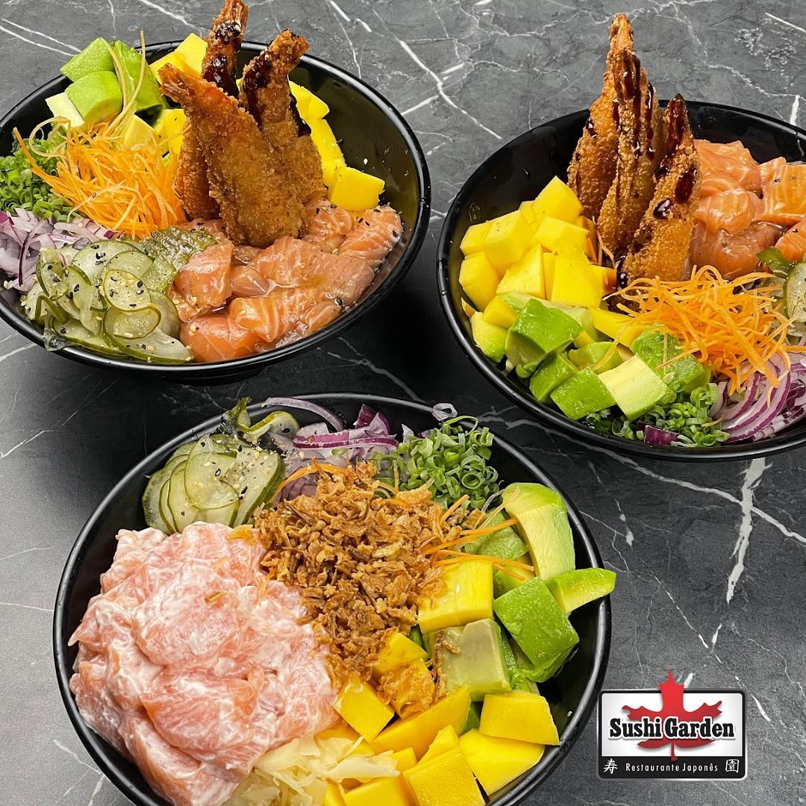
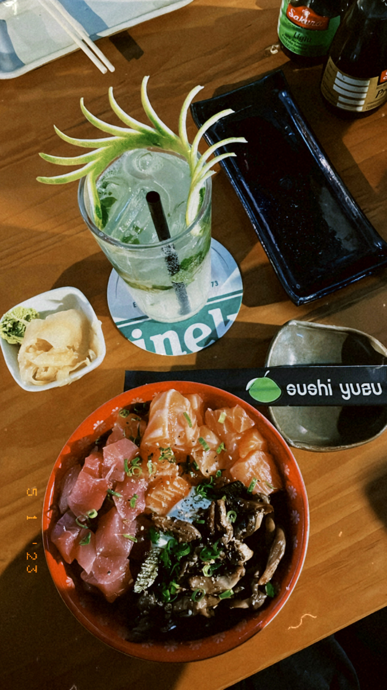

Explorando os Tesouros Gastronômicos de Blumenau: Os Top 2 Pokes que Você Não Pode Perder!
🍣🌺 Prepare-se para uma jornada gastronômica única enquanto exploramos o queridinho que conquistou corações ao redor do mundo: o Poke! 💕 Se você já se rendeu aos encantos dessa delícia havaiana ou está curioso para experimentar, este é o momento perfeito para embarcar nessa aventura culinária. O Poke, famoso por sua frescura e sabor inigualáveis, viralizou no TikTok e rapidamente se tornou um favorito entre os amantes de comida de todo o mundo. 😋🌴
Diferente do tradicional sushi japonês, o Poke oferece uma experiência culinária única, combinando ingredientes frescos, como frutas e proteínas, em uma harmonia de sabores que vai encantar seu paladar. ❤️🍍 E aqui em Blumenau, estamos agraciados com verdadeiros tesouros quando se trata de Poke, proporcionando uma variedade de opções que prometem surpreender até mesmo os paladares mais exigentes. 😍✨
Sushi Garden - O Poke dos Sonhos!
Em busca do poke perfeito? O Sushi Garden, em Blumenau, é a resposta. Combinando ingredientes frescos e uma apresentação impecável, o Poke Garden se destaca como uma escolha irresistível, pelo preço de R$59,00. Este poke é verdadeiramente gigante, repleto de frescor em cada mordida. Uma característica que me encanta é a alga crocante, que sempre é enviada separadamente, elevando ainda mais a experiência gastronômica.
Ah, e não posso deixar de mencionar o sunomono de brinde! Quem me conhece sabe que o Sushi Garden tem todo o meu coração. Costumo pegar o Poke Garden para uma noite de filmes com meu namorado, mas prometo um dia desfrutar do ambiente acolhedor do restaurante. A vibe é simplesmente aconchegante, com uma equipe simpática que faz toda a diferença. E quanto ao suco de kiwi, recomendo essa dupla para uma experiência completa!
Sushi Yuzu - Uma Explosão de Sabores em Cada Garfada!
No Sushi Yuzu, cada garfada é uma verdadeira explosão de sabores! O poke é conhecido como chirashi, destacando-se pela preservação do sabor natural do peixe. Minha escolha favorita inclui salmão, atum e shimeji - sim, eu sou apaixonada por cogumelos no poke!
Uma diferença notável em relação ao Sushi Garden é que podemos escolher até 3 ingredientes, incluindo até 3 proteínas, por um preço de R$59,00, com um adicional de R$15,00. Para esse, recomendo o drink: mojito. A base é composta por arroz, cebolinha, gergelim e nori, embora o cream cheese sempre dê um toque inesperado. Um pequeno ponto de atenção é que, apesar de solicitar sem cream cheese devido à minha intolerância à lactose, algumas vezes ainda é incluído.
São excelentes opções aqui em Blumenau! O Sushi Garden está localizado na Av. Martin Luther, 900, no bairro Victor Konder, Blumenau - SC, 89012-011, e recebe clientes de segunda a sábado. Já o Sushi Yuzu está situado na rua Curt Hering, 33, no Centro de Blumenau - SC, 89010-030, também aberto de segunda a sábado. Ambos os restaurantes oferecem uma experiência gastronômica excepcional, então fique atento para descobrir se eles estarão entre os melhores em nosso próximo post sobre sushi! 🍣🌟
Essas duas opções oferecem experiências gastronômicas únicas, e estou ansiosa para compartilhar mais momentos deliciosos com vocês!